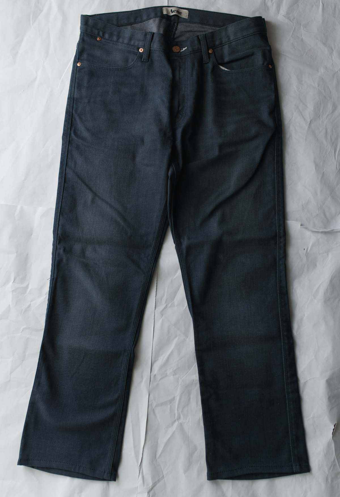

The Dangers of Steam Cleaning Fine Oriental Carpets
For many homeowners, steam cleaning is the default method for cleaning floor coverings. While this extraction system works reasonably well for standard synthetic wall-to-wall carpets, it represents a severe, often irreversible danger to high-end, hand-knotted wool, cotton, and silk oriental rugs.
The primary issue lies in the temperature. Steam cleaners operate by injecting hot water and high-pressure steam (often exceeding 180°F) directly into carpet fibers. While synthetic fibers like nylon can withstand this heat, natural organic fibers are extremely sensitive to temperature extremes.
"Steam cleaning antique wool and silk is the equivalent of washing a delicate cashmere sweater in boiling water. It strips natural protections and warps the structural knots."
1. Stripping of Natural Lanolin Oils
Natural sheep wool contains lanolin, a natural protective wax coating. Lanolin is what gives fine wool rugs their brilliant luster, soft feel, and natural water-repelling traits. High-temperature steam melts and strips lanolin away. Once stripped, wool fibers become brittle, lose their natural sheen, and are far more susceptible to wearing down and absorbing dirt.
2. Severe Color Bleeding and Running
Fine Persian and oriental rugs often utilize traditional vegetable or organic dyes. These dyes are beautiful but sensitive to heat and alkaline pH solutions. When subjected to hot steam and generic machine shampoos, dyes destabilize, causing colors to run or bleed into lighter surrounding piles. Correcting a color run is an intensive, expensive restoration process.
3. Structural Shrinkage and Foundation Warping
Hand-knotted rugs are made on a cotton or wool foundation warp. Wetting these cotton warp threads under heat and pressure causes fibers to shrink unevenly as they dry on the floor. This results in buckling, waves, and curled borders that prevent the rug from lying flat. In our workshop, we dry rugs flat in temperature-controlled chambers with tension grids to maintain perfect geometry.
If you want to protect your rug investment for future generations, avoid the local steam cleaning truck. Seek out a certified workshop that utilizes traditional flowing-water hand pool washing.